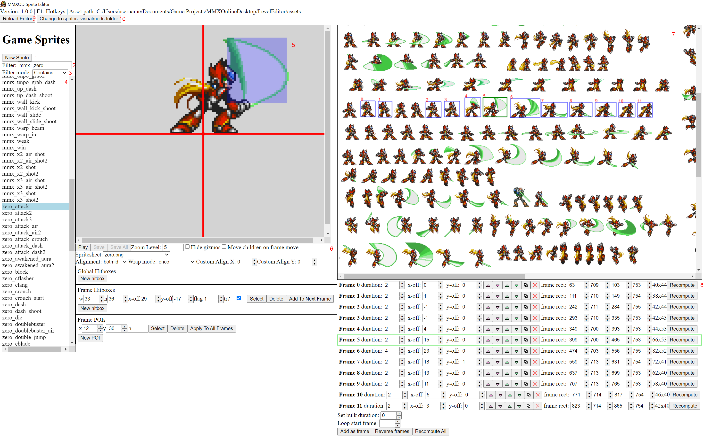

Welcome to the modding scene for MMXOD! Here you will learn how to use the sprite editor tool. Previously this was used only by Gamemaker19 to develop the game, but was released to the public to allow others to much more quickly edit sprite JSONs for visual mods.
Installation/Getting Started
Download the editor from the Tools section of the site, and then unzip it. Note that right now, this program is only for Windows. Run "MMXOD Sprite Editor.exe" in the program folder. Follow the prompt to select an assets folder where the program will make its edits. Afterwards, the program will load all sprites for editing. If you need to change it, edit the assetPath string in the "config.json" file that gets generated in the program folder (be sure to use forward slashes in the path), or simply delete config.json and re-run the program to select a new path in the UI.
config.json is the settings file with all persistent settings that the program uses that gets saved to disk, and you can put it in a Documents folder called "MMXOD Editor" to have the program look there instead of the program folder on startup. Otherwise you will have to copy-paste it over every time the editor gets a new update.
Basic Architecture
A sprite is the base entity for MMXOD graphics/rendering/drawing. It is better thought of as an animation, as it is a collection of frames. Each sprite maps to one spritesheet, and the frames are rectangles in this spritesheet. Each frame can have data such as hitboxes and the top-level sprite has top-level sprite/animation metadata.
In MMXOD, sprite data is stored in three folders: the "assets\sprites" folder and the "assets\sprites_visualmods" folder which has JSON files, each of which represents a single sprite and contains the metadata for that sprite, and the "assets\spritesheets" folder which has the spritesheet images that the sprites use.
The difference between "assets\sprites" and "assets\sprites_visualmods" is that changes to "assets\sprites" will change the game's checksum version, meaning you can only play online with those who made the same exact edits. So, if you just want to mod visual aspects of sprites, to get around this there's a separate folder for that, "assets\sprites_visualmods". Copy-paste into this folder the sprite JSONs you want to visually mod only, and switch the editor's context to that folder (using the "sprites_visualmods folder" button at the top menu of the editor). Only visual edits to JSONs in this folder will be respected, but you can still play online with anyone else.
The editor allows you to modify the JSONs, but won't help you for modifying actual image files. For modifying the spritesheet PNGs, use an external drawing program like Photoshop, Aseprite, Paint.NET, Gimp, etc. You'll have to reload the program after saving any changes to the PNGs.
UI Component Overview
Here's an overview of the high level UI components of the sprite editor.

1. New sprite button: Click this to add a new sprite. For most mods this will not be of use since the game generally won't read new custom sprites. The one exception is custom map sprites (more on that in the Map Editor help guide).
2 & 3. Filter options: enter a comma separated list of strings to filter the sprite list (#4) by. Can use the filter mode to determine matching criteria. Filters are saved between sessions.
4. Sprite list: shows all the sprites meeting the filter criteria, or all sprites in MMXOD if no filter is applied. A sprite is represented by a JSON file in the sprite folder and encompasses a set of frames in a certain spritesheet. Click on a sprite to select it, which it can then be edited in the components to the right. A * appears next to a sprite name if it has unsaved changes. You can switch sprites any time without having to save it beforehand.
5. Sprite display: shows the current frame of the current selected sprite, as well as any hitboxes and POIs (positions of interest). Can also play an animation of the current sprite if "Play" button is clicked in section 6.
6. Sprite properties: has a bunch of action buttons, and properties that can be changed for both the top level sprite and frame-specific ones.
Play button: plays the current animation. Click it again to stop.
Save button: saves all changes in the current selected sprite to disk.
Save All button: saves all changes for all changed sprite to disk.
Hide gizmos: show the red lines displaying the center point and other indicators in the Sprite display.
Move children on frame move: check to make all child hitboxes/frame hitboxes/POIs move if the frame's offset is changed.
Spritesheet: change the spritesheet image file used by the sprite here.
Alignment: Specifies origin point of the sprite.
Wrap mode: Specifies looping behavior of the animation.
Custom Align X/Y: customizes the origin point offset.
Global/Frame Hitboxes: You can add hitboxes here, used for collision detection for attack sprites.
Frame POIs: positions of interest defined on the frame. Used for things like projectile shoot positions, headshot origin point (flag "h"), etc.
7. Spritesheet display. Shows the spritesheet used by the current sprite's frames. Note that a sprite can only have one associated spritesheet so all frames for your animation must be in a single image file. You can select pixel clumps here by clicking on areas in this display, and it will try to give you a rectangle selection representing a discrete image using a "flood fill" algorithm. This is the primary means of adding/changing frame rectangles in the sprite. In addition you can rectangle select sections to grab, useful for getting separate clumps of pixels in one frame for situations where separate "islands" of pixel clumps make up a single frame (for example, some of Zero's air slash sprites in the screenshot). It also outlines in blue the frame rectangles used by the sprite and labels them with the frame number. Your current rectangle selection is green-bordered.
8. Frame list. A list of all frames in the sprite, followed by their duration, x offset, y offset, frame rectangle, and a bunch of utility buttons. Each entry can be selected by clicking on it to change the current frame displayed in the Sprite display. You will be doing this a lot so there is a hotkey: Q goes to the previous frame and E goes to the next one.
duration: the duration in frames. At 60 FPS, 1 frame is roughly 0.16 s, 2 is 0.33 s, etc.
x-off/y-off: x and y offsets of the frame. Change these to better align frames for smooth animations. You'll be changing these a lot, so there is a hotkey: WASD for move up/left/down/right. If you hold down LSHIFT you will move 10 pixels at a time.
Utility buttons: only the 5th button (replace frame) is usable in the public version. It will take whatever rectangle selection you have in the spritesheet display and replace the current frame with it. Alternatively, have one frame selected and press this button on another frame to copy over the frame rectangle. Can also be activated with R hotkey.
frame rect: the topleft x/topleft y/botright x/botright y coords of the current frame rectangle. Change this if the sprite rectangle cuts off some of the actual frame image (or is too big).
recompute button: this attempts to smartly "recompute" the frame rectangle if it is too small to fit the current pixel clump, and will try to make it cover exactly the bounds of the pixel clump. On occassion, it may not give desired results, so be sure to double-check and if so, manually assign the frame rectangle.
Set bulk duration: allows you to quickly set the duration for all frames.
Loop start frame: what frame to start looping on. Not used for mods, as this affects gameplay.
Add as frame: add the current pixel clump rectangle at the end of the frame list. Not used for mods, as this affects gameplay.
Reverse frame: reverses all frames.
Recompute all: applies the "recompute" button for all frames in the current sprite.
Important Concepts
Activate "Ghost" mode by pressing G, a highly useful feature that overlays a transparent image of the current sprite in the sprite display and leaves it there even if you change sprites or frames. Press Escape to remove the "Ghost". This is useful for aligning frames in the sprite as well as aligning different sprites that transition into each other (i.e. jump into fall into land into idle, etc).
Undo/redo are supported (ctrl+z, ctrl+y). All actions are undoable, including selections, though there can only be 100 undo entries in the queue before the earliest one gets deleted. Be careful when undoing many times in sequence; if you undo several times and then make a change, you'll lose all the undo'd changes up to that point.
It is recommended to save often and tread through the UI slowly and carefully. This is not a professional project supported by a large team and so may not be of the highest quality or stability. Therefore be slow and cautious and try not to spam clicks or keystrokes too quickly. Saving individual sprites frequently is preferred to "banking up" a large number of changes in multiple sprites and using Save All.
Text/number fields don't have an "apply" button. To apply your changes after typing in a value, either click outside of it, or press the TAB key to exit focus on the input and move to the next one.
Hotkeys are important to be productive. You should have your left hand on WASD and your right hand on the mouse (like in an FPS). This allows you to quickly edit sprite frame positioning with WASD while switching frames with Q/E with your left hand. Your right hand can add frames in the spritesheet display and press buttons.
Modding frames and hitboxes in "assets\sprites" can open up the possibility of new attacks, but for some sprites this can introduce bugs and instability. For example, some attacks are coded by the engine to read off a certain frame number for an effect, so removing that frame can have unintended consequences. Remember that you can only play online with others who have the same "assets\sprites" changes as you do.
Hotkeys
Undo: Ctrl+Z
Redo: Ctrl+Y
Add Selected Frame: F
Replace Current Frame With Selected Frame: R
W/A/S/D: Move selected frame offset
Q/E: Go to previous/next frame
G: Activate Ghost mode
Escape: Exit Ghost mode
Ctrl+Mouse Wheel: Zoom sprite display in/out (must click on sprite display first to gain focus on it)
Changelog
3.0.0
The flag parameter in the editor was replaced with a dropdown of various options (replacing unintuitive "flag" setting of previous version):
Hitbox: represents an area of a sprite that deals damage.
Hurtbox: represents an area of a sprite that can receive damage and detect other collision.
Hitbox+hurtbox: both of the above.
None: like Hurtbox, but without the receiving damage part. This will only engage with non-damaging collision sources, like walls.
Added a checkbox option to copy/move frames to top/bottom, useful for quickly copying/moving a frame to the top or bottom of the list. This is found at the top of the frame list section.
Added an option to place hitbox rectangles with mouse. This is a button in the add hitbox section, and lets you click the top left and then the top right coords on the canvas to create the desired hitbox rectangle faster.
Added support for naming hitboxes (for special use by the engine only).
Removed bilinear filtering in map/sprite editor, making canvases not blurry but pixel-perfect when zoomed.
Fixed a bug where just clicking on an input field would force the editor state to become dirty.
Fix a bug where spritesheet canvas occasionally couldn't scroll all the way to right/down.
Remove ping pong option from sprite editor as it's no longer supported by the game engine.
2.0.0
Introduced Map Editor in the same MMXOD Editor bundle.
Frame duration now represented in game frames as opposed to seconds, to simplify animation editing. 1 frame is 1/60 of a second.
Introduced a button to reload the editor in the top ribbon. This will refresh spritesheet image changes made in external programs. However it's equivalent to closing and re-opening the app so it will prompt you for confirmation first warning you'll lose unsaved changes.
"assets\sprites" folder can now be modded freely (removed the allowUnsupportedActions config flag). However, changes in this folder will change the game checksum version, meaning you can only play with others online who have the same changes.
Added a button to change from the "assets\sprites_visualmods" folder, where you can make visual sprite changes only without changing the game checksum version, to the "assets\sprites" folder, and back. Note that it defaults to "assets\sprites_visualmods" which is empty so you'll need to copy+paste any sprites you want to visually mod from the assets\sprites folder.
The allowUnsupportedActions flag is no longer respected (it will always block unsupported actions in the sprites_visualmods folder, and never in the sprites folder.)
Added a "force dirty" button that lets you enable save button even if there were no changes perceived by the editor.